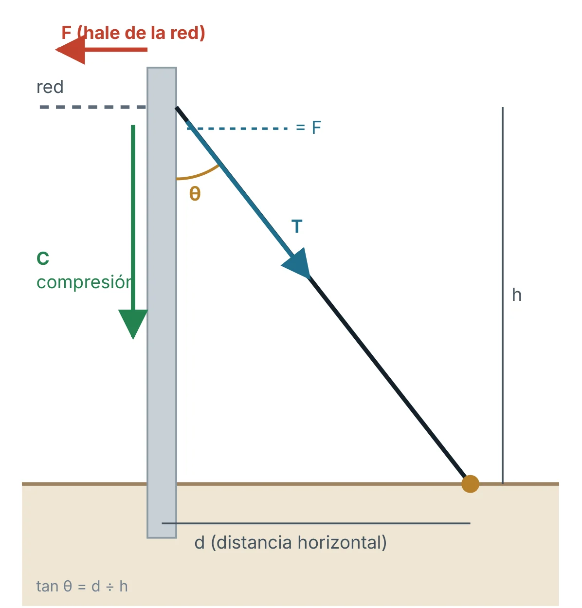
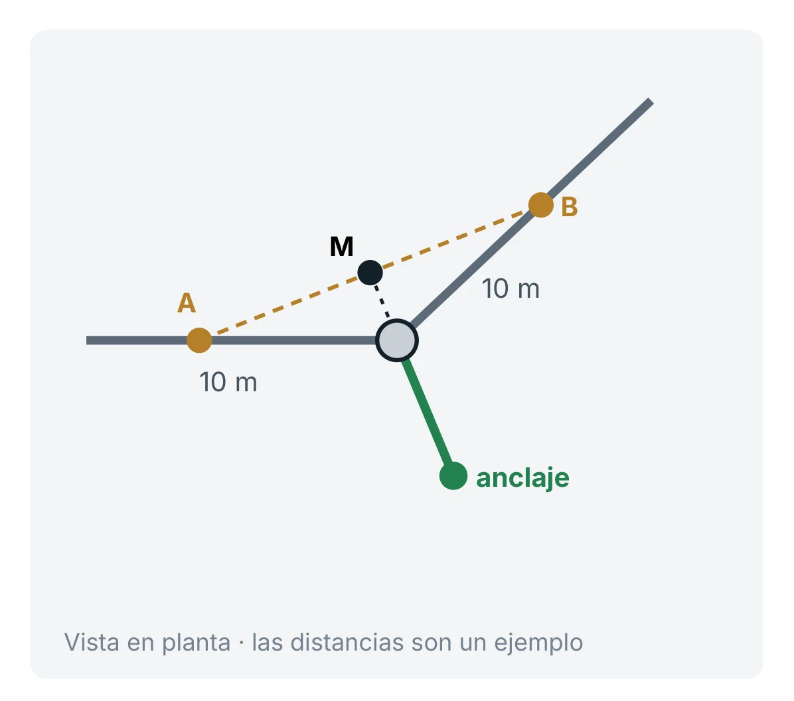
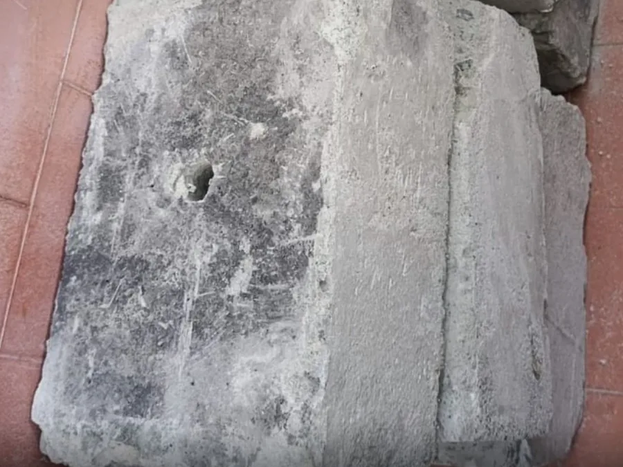
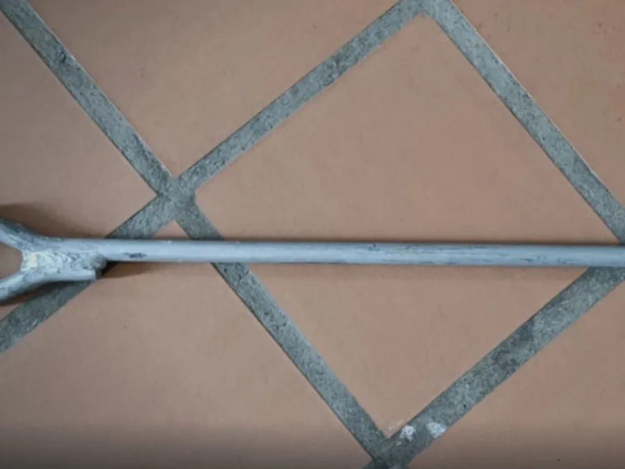
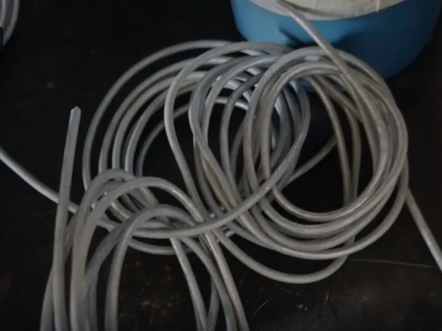
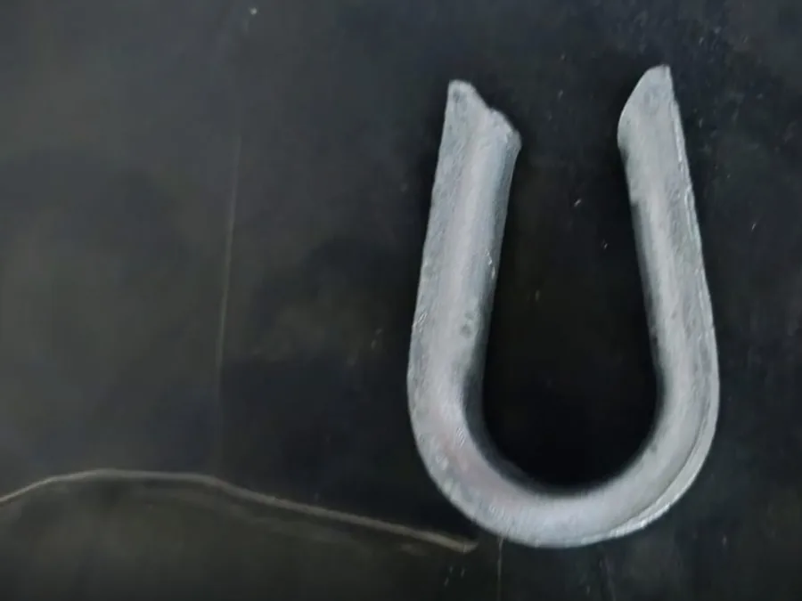
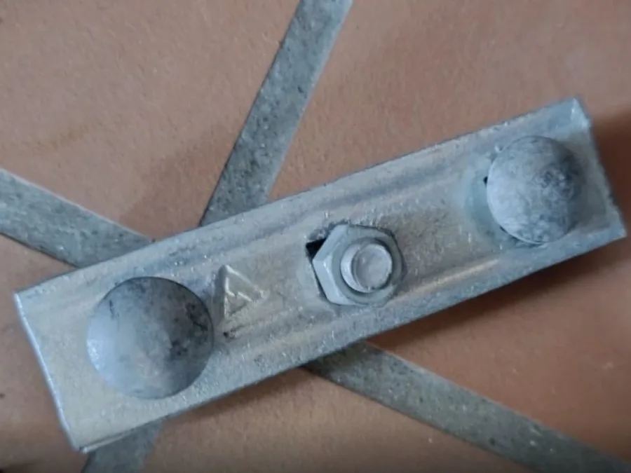
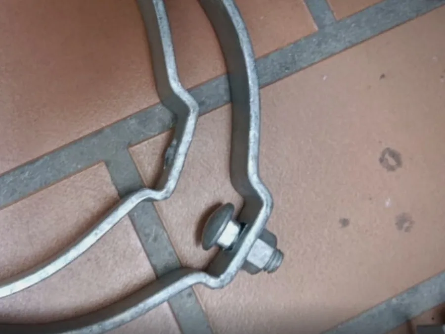

Parte 4
Instalación de retenidas
Cubre los pasos 1 a 9 del procedimiento. Ver en YouTube (se abre en otra pestaña)
Instalación de una retenida a tierra en un poste de red troncal: anclaje enterrado, cable de acero, terminaciones y herraje superior, con los criterios para aceptarla o rechazarla.
Material de apoyo formativo. Los procedimientos de este módulo son pautas generales de capacitación. En obra se aplican junto con el protocolo de seguridad y salud en el trabajo de la empresa, la norma del operador dueño del poste y el diseño de cada proyecto, y no sustituyen el criterio del ingeniero responsable.
Al terminar este módulo, el técnico estará en capacidad de:
Aplican dos tipos de norma: las leyes nacionales fijan la seguridad de quienes instalan la retenida, y la norma técnica del operador dueño del poste fija cómo se construye.
La Resolución 5018 de 2019 incluye expresamente las actividades con peligro eléctrico en redes de telecomunicaciones. Las medidas de la retenida no están en ninguna de estas normas: las define cada operador de red (ver la clave 2).
Video 4 de la serie Construcción de redes troncales, producida por NPE, con narración y subtítulos. Las partes 1 a 3 (seguridad, tendido, herrajes y tensionado) están en el módulo Redes troncales de telecomunicaciones y la parte 5 en Instalación de postes metálicos.
Cubre los pasos 1 a 9 del procedimiento. Ver en YouTube (se abre en otra pestaña)
Secuencia de referencia para instalar una retenida a tierra. Los pasos siguen el orden de los capítulos del video.
Tres errores que no se cometen: amarrar la retenida a un árbol, una cerca o una estructura que no fue diseñada para eso; instalar el cable sin guardacabo o con grapas flojas; y tensionar de más, hasta sacar el poste de su posición.
Datos que el video no explica: por qué funciona una retenida, qué medidas tomar y cuándo detener el trabajo. El tema completo está en la guía técnica de campo (PDF).
La retenida convierte el hale lateral de la red (F) en tensión en el cable (T) y compresión en el poste (C). Si θ es el ángulo entre el cable y el poste, T = F ÷ sen θ y C = F ÷ tan θ: cuanto más cerca del poste queda el anclaje, más se cierra el ángulo y más crecen las dos.

| Distancia del anclaje | Ángulo θ | Tensión del cable | Compresión del poste |
|---|---|---|---|
| d = h ÷ 3 | 18,4° | 6,3 kN | 6,0 kN |
| d ≈ 0,58 h | 30° | 4,0 kN | 3,5 kN |
| d = h | 45° | 2,8 kN | 2,0 kN |
Mismo hale lateral en los tres casos: F = 2 kN, valor supuesto para comparar. Por la misma razón la varilla va inclinada en la dirección del cable: así trabaja a tensión a lo largo de su eje; vertical, el cable la dobla y la arranca del relleno con mucha menos fuerza.
En campo: el anclaje no se “acomoda” más cerca del poste porque falta espacio: pasar de d = h a d = h ÷ 3 duplica con creces la tensión y sobrecarga el cable, las grapas, el anclaje y el poste.
No hay una ley nacional con las medidas de una retenida: cada operador de red las define en su norma de construcción. Dos normas colombianas consultadas muestran por qué no se pueden mezclar:
| Criterio | Enel Colombia · LA 410 y LAR 410 | Electrocaquetá · Norma técnica 02 |
|---|---|---|
| Distancia del anclaje | d ≥ ⅓ de la altura de fijación | Ángulo cable-poste ≥ 30° (d ≥ 0,58 h) |
| Varilla sobre el suelo | 10 a 15 cm | Mínimo 20 cm |
| Aislador tensor | En toda retenida poste-varilla, de la clase que pida la tensión de la red | A mínimo 4 m del piso y al menos 1,5 m por debajo del punto de amarre |
En campo: antes de excavar se pregunta qué norma aplica y se confirma su versión vigente con la interventoría. La medida de otro proyecto no se copia.
La altura de fijación h va del suelo al collarín. La distancia d se mide sobre el suelo, desde la base del poste hasta donde sale la varilla. Con un decámetro y una calculadora se resuelve en sitio:
Criterio ⅓ h: 8,0 ÷ 3 = 2,67 m. Criterio 30°: 8,0 × 0,577 = 4,62 m. Con d = 4,62 m, el cable mide √(8,0² + 4,62²) = 9,24 m; con 1,5 m de sobrante, se cortan unos 10,7 m.
Cifras supuestas para practicar. Si el aislador va intercalado, el cable se corta en dos tramos que suman esa longitud.
En campo: el mismo poste puede pedir el anclaje a 2,7 m o a 4,6 m según el operador. El cálculo da el corte con margen; la medida exacta se ajusta al instalar.

Para comprobar, desde el punto de la varilla los dos tramos deben verse abiertos en partes iguales a cada lado del poste.
En campo: si la distancia calculada cae sobre una vía, un acceso o un predio, no se acerca el anclaje: se consulta al diseñador, que puede cambiar a una retenida poste a poste (Enel pide el cable a no menos de 5,4 m sobre la calzada y 2,4 m sobre la vía peatonal) o a poste auxiliar.
Lo regula la Resolución 2413 de 1979, y de su relleno depende que el anclaje no se arranque meses después.
En campo: si al excavar aparece una tubería, una cinta de advertencia o un ducto, se suspende y se informa: no se rompe ni se mueve.
La parte alta de una retenida puede quedar energizada si toca una red; para eso existe el aislador tensor. Además, una retenida ya está trabajando con su propia carga.
En campo: nadie sujeta, sube ni ancla equipos a una retenida existente: ni el aparejo de tensionado ni el sistema contra caídas, que según la Resolución 4272 de 2021 exige anclajes certificados o autorizados.
Qué es cada pieza y cuándo se rechaza. Los materiales se revisan antes de cargarlos al vehículo, para no descubrir el defecto al pie del poste. Fotografías tomadas del video del procedimiento.

Bloque de anclajeConcreto, medidas del diseño · en campo, «muerto»Se rechaza si tiene fisuras que lo atraviesan, aristas rotas, hierro expuesto o la perforación desalineada.

Varilla de anclajeAcero galvanizado, diámetro y longitud del diseñoSe rechaza si está doblada, tiene el ojo abierto o fisurado, la rosca dañada o el galvanizado desprendido.

Cable de acero galvanizadoDiámetro y grado del diseñoSe rechaza si tiene hilos rotos o abiertos («pajarera»), cocas o dobleces marcados, zonas aplastadas u óxido rojo.

GuardacaboDel tamaño del cable, que asienta completo en el canalSe rechaza si está deformado o abierto, o su canal es más angosto que el cable.

Grapa de tres pernosPara el diámetro del cableSe rechaza si tiene un perno sin tuerca o con la rosca barrida, el cuerpo fisurado o ranuras de otro diámetro.

CollarínSegún el diámetro del poste a la altura de fijaciónSe rechaza si le faltan pernos, tiene las orejas dobladas o no cierra sobre el poste.
Se rechaza si está despostillado, fisurado o con el esmalte roto, aunque el daño parezca pequeño.
Criterios de inspección visual general. Prevalecen la ficha del fabricante y las especificaciones del diseño.
| Peligro | Severidad | Control |
|---|---|---|
| Derrumbe de la excavación | Alta | Taludes o apuntalamiento según el terreno, material lejos del borde y nadie dentro de un hueco con paredes inestables. Inspección después de cada lluvia. |
| Redes enterradas | Alta | Revisar planos y marcas en el piso, y excavar con cuidado los primeros centímetros. Ante una tubería, cinta o ducto, suspender e informar. |
| Caída de altura al montar el collarín | Alta | Permiso de trabajo, trabajador autorizado y sistema contra caídas conectado a un anclaje certificado. |
| Contacto eléctrico por la parte alta | Alta | Identificar las redes, respetar las distancias, aislador tensor en su posición y no tocar retenidas existentes. |
| Latigazo del cable en tensión | Alta | Nadie en la línea del cable durante el ajuste; tensión progresiva. |
| Caída de herramientas y herrajes | Alta | Herramientas en bolsa, con cuerda de servicio, y la zona de abajo despejada. |
| Cortes y golpes con el cable de acero | Media | Guantes de vaqueta y gafas. Cable desenrollado de forma controlada, amarrado antes del corte y con los remates completos. |
Señales de una retenida que está fallando, su causa probable y qué hacer. Toda falla se reporta y se corrige con procedimiento.
| Señal | Gravedad | Qué hacer |
|---|---|---|
| Poste inclinado hacia el lado de la redRetenida floja, ángulo insuficiente o anclaje que cede. | Crítica | No subir. Delimitar la zona de caída del poste y reportar de inmediato. |
| Tierra levantada o agrietada alrededor de la varillaEl anclaje se está arrancando o el relleno quedó mal compactado. | Crítica | No subir ni tensionar. Reportar para revisar el anclaje. |
| Aislador tensor roto o fisuradoGolpe, vandalismo o sobrecarga. | Crítica | No tocar el cable por encima del aislador. Reportar para que lo cambie personal autorizado. |
| Retenida amarrada a un árbol, una cerca o un muroAnclaje improvisado. | Crítica | Reportar para reubicarla con un anclaje de diseño. |
| Cable con comba, sin tensiónGrapas deslizadas, anclaje asentado o poste desplazado. | Alta | Revisar las grapas y el anclaje. Retensionar con procedimiento, no a mano. |
| Hilos rotos o abiertos en el cableGolpe, coca durante la instalación o roce. | Alta | Cambiar el tramo de cable. No se repara con cinta ni con amarres. |
| Ojo sin guardacaboInstalación incompleta. | Alta | Rehacer la terminación con guardacabo. |
| Cabeza de la varilla enterradaRelleno por encima del nivel de diseño. | Media | Descubrirla hasta la altura de la norma del operador: enterrada no se puede inspeccionar. |
Una pregunta por cada clave técnica; tres son casos de campo. Respóndala y luego ábrala para comprobar.
Sube la tensión del cable y sube la compresión del poste: T = F ÷ sen θ y C = F ÷ tan θ crecen al cerrarse el ángulo.
No. Cada operador fija sus medidas (Enel pide d ≥ ⅓ h; Electrocaquetá, un ángulo de al menos 30°). Se aplica la norma del dueño del poste.
La distancia mínima es 7,5 × 0,577 = 4,33 m. A 2,8 m el ángulo queda en unos 20°, por debajo del mínimo. No se acorta: se informa al supervisor para que el diseñador defina otra solución, como una retenida poste a poste o a poste auxiliar.
Sobre la bisectriz del ángulo, del lado contrario a donde halan los dos tramos.
No. Primero se inspeccionan las paredes (Res. 2413, art. 22). La cinta suele marcar una red enterrada: se suspende en ese punto y se informa al supervisor.
Que no. Es un anclaje improvisado; la comba indica que su anclaje o sus grapas fallan, y con el aislador dañado la parte alta puede estar energizada. Se usa un anclaje autorizado y se reporta la retenida dañada.